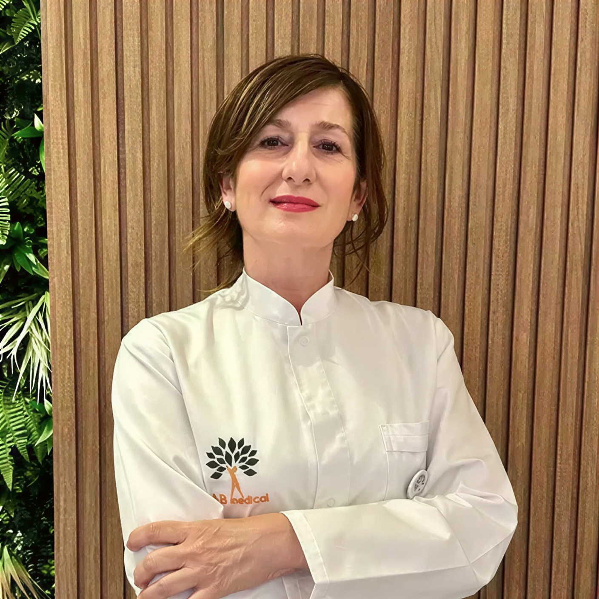

Lekar · Terapeut · Naturopata
Naturopata, psihosomatski terapeut i autor Therapeutica metode, pristup koji spaja više od 30 terapijskih tehnika u jedinstveni individualni protokol za telo, um i duh.

„Put ka zdravlju počinje iznutra, odlukom da čujete svoje telo."
— Dragana Blagojević Lombardelli Lekar · Terapeut · Naturopata
Lekar · Terapeut · Naturopata
Rođena sam u Beogradu 1967, gde sam živela i školovala se do 1989. Po odlasku u Italiju postajem tehničar sportske medicine i kardiologije, termalni asistent i operator hitne pomoći. Godinama radim u poliklinici i termalnom stacionaru Terme Santa Lucia u Tolentinu (Macerata).
Diplomirala sam holističku medicinu, psihosomatiku i naturopatiju u Bolonji, pri institutu Riza iz Milana. Specijalizovala sam se u više od 30 tehnika, među kojima su: Bahove kapi, refleksologija stopala i tela, aromaterapija, anti-stres tehnike, prirodna ishrana (eubiotika), hromoterapija i hromopunktura po Peteru Mendelu, WingWave coaching, iridologija, Bars tehnika, kvantna harmonizacija po Franku Kinslowu, fito- i gemoterapija, oligoterapija.
Od 2016. sarađujem sa medicinskim centrima u Beogradu, držim predavanja i radionice, učestvujem na festivalima zdravlja i pišem za vodeće časopise (Sensa, Lepota i zdravlje, Viva, Ilustrovana politika, RYL, Original fondacije Novaka Đokovića). Sa Novakom sam imala čast da održim predavanje o holističkom pristupu deci u sportu.
Osnivač sam i predsednik Udruženja naturopata Srbije i član federacije italijanskih naturopata, Riza. Autor sam knjige „Naturopatija, Priručnik za empatiju tela, uma i duha". Moj pristup počiva na uverenju da simptom nije neprijatelj, već signal.
Više od 30 tehnika, integrisanih u Therapeutica metodu, individualni protokol prilagođen baš vama.
Fitoterapija, gemmoterapija i oligo terapija mineralima, prirodna podrška telu na ćelijskom nivou.
Cvetne esencije za emocionalnu ravnotežu, mentalno blagostanje i nervni reset.
NLP, kognitivna psihologija i bilateralna stimulacija mozga za trajnu emocionalnu promenu.
Stimulacija refleksoloških tačaka za sistemski balans, bolji san i opuštanje nervnog sistema.
Quantum Entrainment po Franku Kinslowu, usklađivanje energije tela na dubokom nivou.
Veza emocija i fizičkih simptoma, rad sa telom kao mostom između uma i zdravlja.
Eubiotika i prirodna ishrana koja smanjuje upalu, stabilizuje šećer i podržava hormone.
Eterična ulja i boja kao terapeutski alati za balans nervnog sistema i emocionalni rad.
„Telo nikada ne radi protiv nas.— Dragana Blagojević Lombardelli
Simptomi su način na koji telo traži pomoć."
Lekar · Terapeut · Naturopata
Razgovarajmo o vašim ciljevima i pronađimo protokol koji je pravi za vas.
Kontaktiraj meNaturopatski programi su edukativnog i suportivnog karaktera i ne zamenjuju medicinsku dijagnostiku ni terapiju lekara specijaliste.